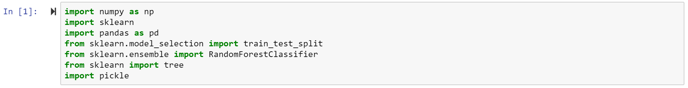
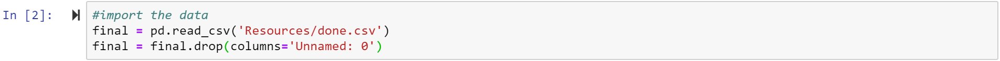
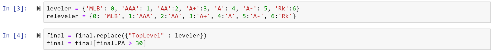
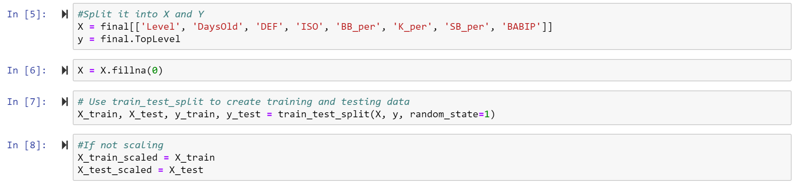
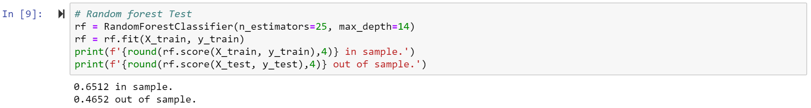
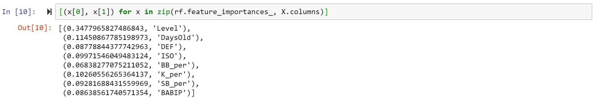
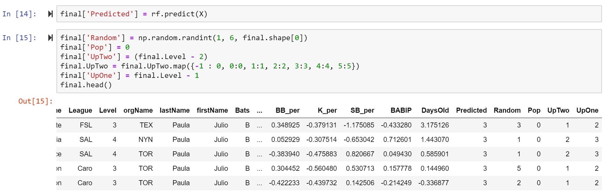

Below is a step by step process of how our model was created:
Step 1 - The imports:
Step 2 - Imported our dataset, which was cleaned to be uniform from our CSV, while dropping unnamed columns:
Step 3 - Last bit of data cleaning - changing levels from string to integer, while setting paramters (no one with less than 30 PAs):
Step 4 - Defining X & Y, splitting the data into "train" and "test" models:
Step 5 - Running the Random Forest model:
Step 6 - Gathering the feature importance of the Random Forest model:
Step 7 - Running Decision Tree model for comparison:

Step 8 - Adding 'Predicted' column; comparing to other popular projection methods:
